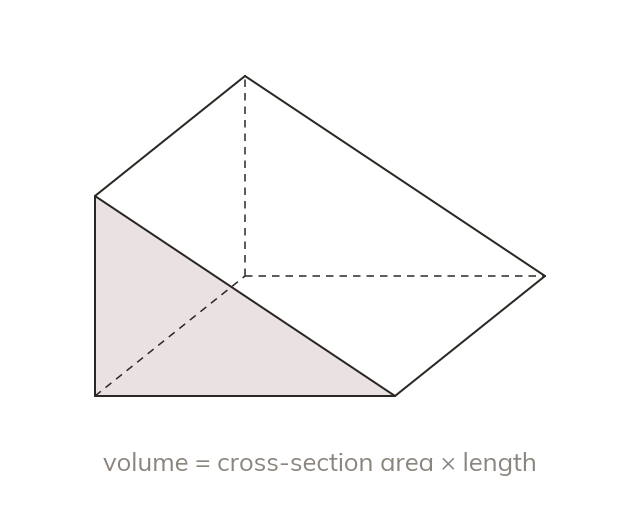
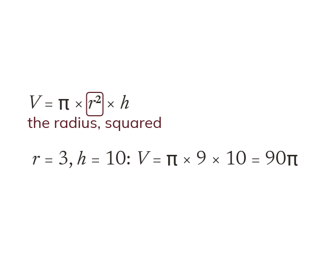
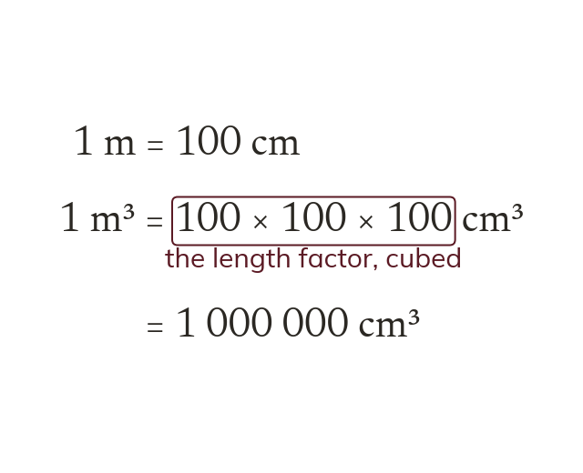
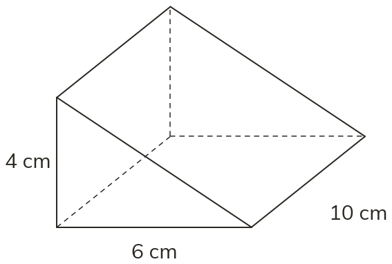
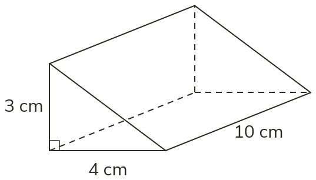
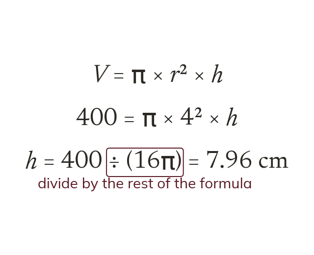
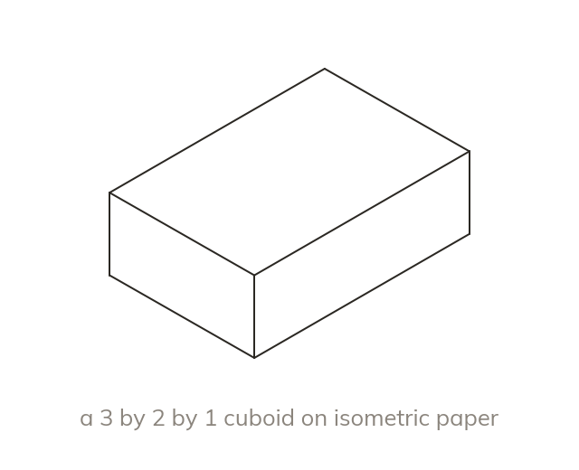
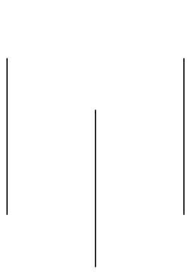
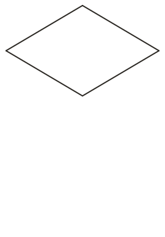
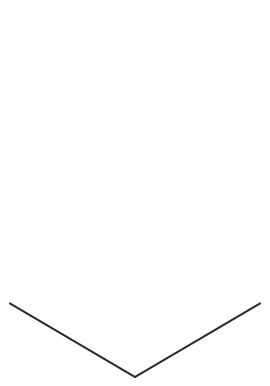

The same cross-section all through
A prism has the same cross-section along its whole length. So its volume is the area of that cross-section × the length.
A tin of beans, a Toblerone box and a swimming pool are all prisms: one shape pushed along a length. Today we find how much any prism holds, and work backwards from what it holds.
Work down the page at your own pace. Write every answer in your book first, then click to check it.
Read each card, then follow the worked examples one step at a time.

A prism has the same cross-section along its whole length. So its volume is the area of that cross-section × the length.

A cylinder's cross-section is a circle, so its volume is It is the radius that is squared, never the diameter.

Every length must be in the same unit before multiplying. A volume converts by the cube of the length factor. So m³ is cm³

Pick an answer. If it's wrong, the feedback tells you which mistake it was.

Read each card, then follow the worked examples one step at a time.

A missing dimension is found by dividing the volume by the rest of the formula. For a cylinder,

On isometric paper vertical edges stay vertical. The other edges follow the grid's slanted lines. Only the visible edges are drawn.



Pick an answer. If it's wrong, the feedback tells you which mistake it was.
Finished? Next lesson: 8.19.3 Surface Area of Cylinders.
Log in, then search for a code to practise that skill.
Videos, worksheets and more on each part of this lesson.